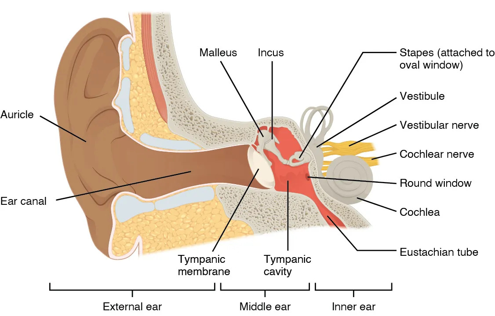
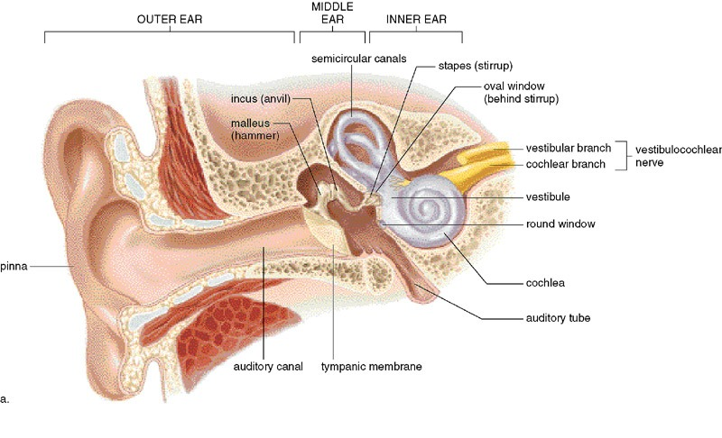
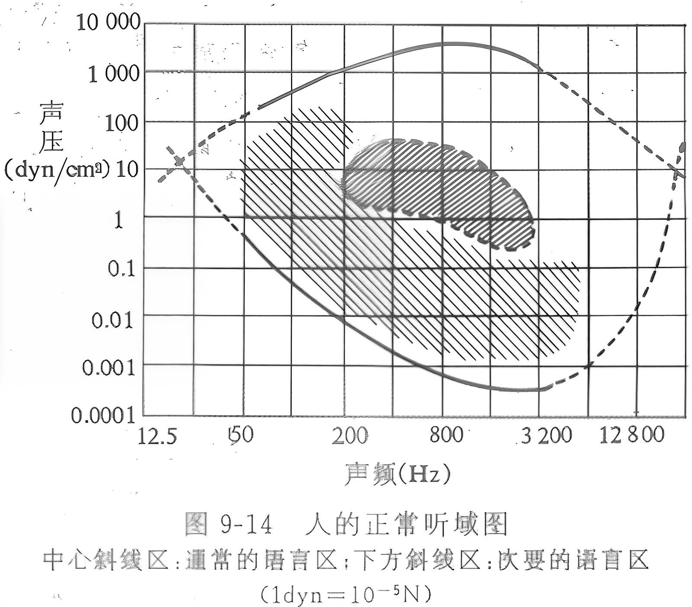

高中生物竞赛讲义 · 集训营
第十章 人及哺乳动物的形态和解剖结构
第十二节 感觉器官 · 三、前庭蜗器——耳
📅 整理日期: 2026年7月4日
三、前庭蜗器——耳
（一）外耳
耳廓
：收集声波
外耳道
：传导声波
鼓膜
：将声波转化为机械振动
（二）中耳
鼓室
：含三块听小骨——锤骨 → 砧骨 → 镫骨（将振动放大并传至内耳）
咽鼓管
：连通鼓室与鼻咽，平衡鼓膜内外压力
（三）内耳
骨迷路
：前庭、骨半规管（3个，互相垂直）、耳蜗
膜迷路
：椭圆囊、球囊（感受直线加速运动和静止位置）、膜半规管（感受旋转加速运动）、蜗管（听觉）

图2：耳的结构（来源：OpenStax Anatomy and Physiology 2e, Figure 14.5, CC BY-NC-SA 4.0）

图：耳蜗结构（来源：教师授课PPT）

图：螺旋器（Corti器）（来源：教师授课PPT）
（四）听觉产生
声波传导与听觉产生通路
声波
→
外耳道
→
鼓膜振动
→
听小骨放大
→
镫骨底板振动前庭窗
→
外淋巴振动
→
基底膜振动
→
螺旋器（Corti器）毛细胞感受
→
听神经
螺旋器
位于基底膜上，是听觉感受器
基底膜不同部位感受不同频率：
蜗底
感受高频，
蜗顶
感受低频
（五）平衡觉
椭圆囊和球囊
：感受直线加速运动和头部静止位置（耳石膜）
三个半规管
：感受旋转加速运动（内淋巴流动刺激壶腹嵴）